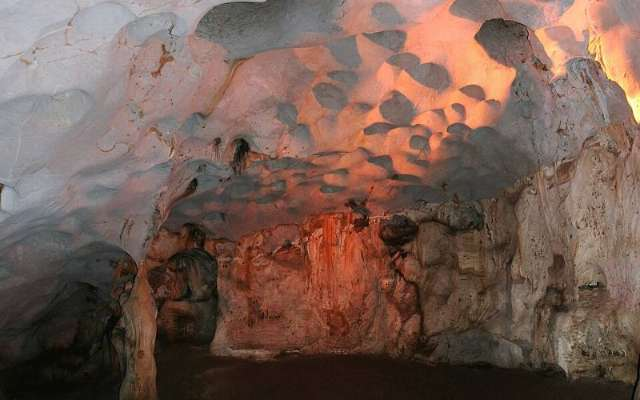

Cascada


Cañón


Lago
 Karagöl (Borçka)Artvin
Karagöl (Borçka)Artvin Lago EğirdirIsparta
Lago EğirdirIsparta Lago HazarElazığ
Lago HazarElazığ Lago KöyceğizMuğla
Lago KöyceğizMuğla Lago MekeKonya
Lago MekeKonya Lago SaldaBurdur
Lago SaldaBurdur Lago SapancaSakarya
Lago SapancaSakarya Lago TuzAksaray
Lago TuzAksaray Lago VanVan
Lago VanVan Lago del cráter de NemrutBitlis
Lago del cráter de NemrutBitlis Lago ÇıldırArdahan
Lago ÇıldırArdahan Parque Nacional de YedigöllerBolu
Parque Nacional de YedigöllerBolu Parque Nacional del Lago BeyşehirKonya
Parque Nacional del Lago BeyşehirKonya Parque Natural del Lago AbantBolu
Parque Natural del Lago AbantBolu Parque Natural del Lago BafaMuğla
Parque Natural del Lago BafaMuğla Parque Natural del Lago del cráter de GölcükIsparta
Parque Natural del Lago del cráter de GölcükIsparta UzungölTrebisonda
UzungölTrebisondaEstación de esquí


Rafting


Ruta de senderismo


Espacio natural
 Cueva de Astım (Silifke)Mersin
Cueva de Astım (Silifke)Mersin Cueva de DupnisaKırklareli
Cueva de DupnisaKırklareli
Cueva de KarainAntalyaCuevas de CehennemağzıZonguldak Montes Beşparmak (Pentadáctilo)Girne (Kyrenia)
Montes Beşparmak (Pentadáctilo)Girne (Kyrenia) Parque Nacional de Karpaz y playa Golden Beachİskele (Trikomo)
Parque Nacional de Karpaz y playa Golden Beachİskele (Trikomo) Playa de las tortugas de AlagadiGirne (Kyrenia)
Playa de las tortugas de AlagadiGirne (Kyrenia) Simas del Cielo y el Infierno (Silifke)Mersin
Simas del Cielo y el Infierno (Silifke)Mersin Yanartaş (Quimera)Antalya
Yanartaş (Quimera)Antalya